몬스터가 움직이고, 기사가 장비를 입고, 마법이 터지다
어제 던전에 픽셀 그림을 입히고 나니 아쉬운 점이 바로 보였어요. 몬스터도 플레이어도 그림처럼 가만히 있다가 순간이동하듯 칸을 옮겼거든요. 오늘은 Claude Code와 함께 움직임을 넣고, 플레이어가 실제로 낀 장비를 입고 다니게 했어요.
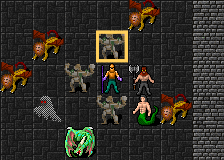
싸움에 움직임 넣기
로그라이크는 턴제라서 키 하나에 플레이어 행동과 몬스터들의 행동이 한꺼번에 계산돼요. 그래서 게임 규칙은 그대로 두고, 그림만 짧게 움직이는 층을 따로 만들었어요.
- 걷기: 칸 사이를 0.12초 동안 미끄러지듯 이동해요. 가까이 보기 화면도 플레이어를 따라 부드럽게 미끄러져요
- 공격: 상대 쪽으로 몸을 쑥 내밀었다 돌아와요. 몬스터들은 플레이어가 움직인 뒤에 한 마리씩 차례로 공격해요
- 맞음: 살짝 밀리며 흔들리고, 그림 모양대로 붉게 번쩍해요
- 피하기: 공격 방향과 직각으로 몸을 비켜서요
- 막기: 방패로 막으면 공격이 온 쪽에 하얀 빛이 번쩍해요
- 쓰러짐: 붉게 물들며 가라앉아 사라져요
- 숨쉬기: 가만히 서 있을 때도 저마다 다른 박자로 한 픽셀씩 들썩여요
움직임이 있는 짧은 순간에만 화면을 자주 다시 그리고, 숨쉬기는 박자가 바뀔 때만 그려서 휴대폰 배터리를 아꼈어요. 기기에서 "동작 줄이기"를 켠 분께는 움직임을 모두 꺼요.
걷는 느낌까지
처음에는 칸 사이를 미끄러지기만 해서, 걷는다기보다 스케이트를 타는 것 같았어요. 그래서 걸음마다 몸 전체로 걷는 느낌을 더했어요.
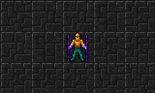
- 통통: 걸음 가운데에서 살짝 뛰어올랐다가 내려앉아요
- 뒤뚱: 발끝을 축으로 몸이 왼쪽·오른쪽으로 번갈아 기울어요
- 먼지: 떠난 자리 발밑에 작은 흙먼지가 일었다 사라져요
다리를 따로 움직이는 그림은 쓰고 있는 무료 그림 모음에 없어서, 몸 전체의 움직임으로 걷는 느낌을 냈어요. 몬스터도 똑같이 걸어요.
장비를 입는 기사
지금까지 플레이어는 늘 같은 파란 기사 그림이었어요. 이제는 실제로 낀 장비만 겹쳐 입어요.
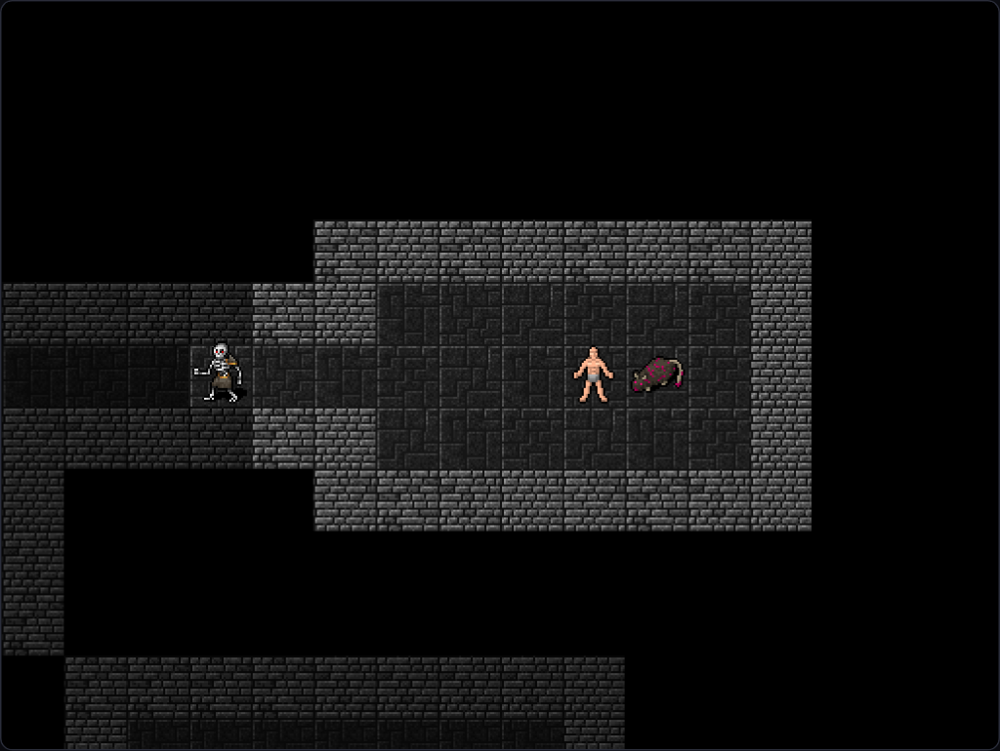
- 아무것도 끼지 않으면 회색 속옷 하나만 입어요
- 장화·바지·갑옷·장갑·투구, 오른손 무기와 왼손 방패를 하나씩 겹쳐 그려요
- 무기는 종류대로 달라요. 단검, 지팡이, 도끼, 장검이 있고, 양손에 하나씩 들면 두 개가 다 보여요
- 부위마다 장비 등급 색으로 칠해요. 레어는 파랑, 에픽은 보라, 레전더리는 주황, 세트는 청록, 유니크는 금색이에요. 음영은 그대로 두고 색만 바꿔서 금속 질감이 살아 있어요
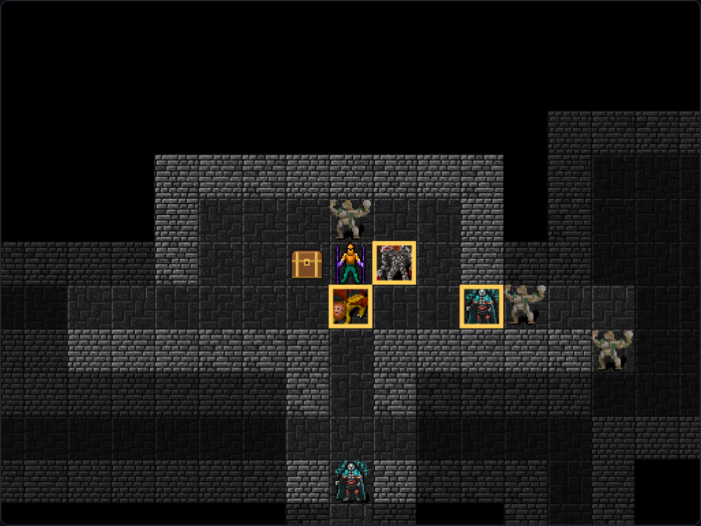
장비를 바꿀 때만 그림을 새로 만들기 때문에 게임이 느려지지 않아요. 로비에서도 내 캐릭터는 지금 낀 장비를 입고 서 있어요.
세트 스킬 이펙트
화염·서리·뇌전 세트의 스킬은 그동안 칸이 잠깐 색으로 번쩍이기만 했어요. 이제 스킬마다 제대로 된 이펙트가 나와요.
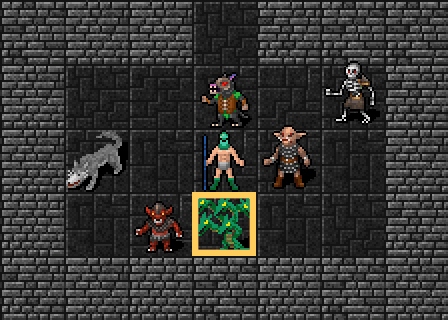
- 파이어볼: 불덩이가 꼬리를 달고 날아가서 3×3으로 터져요. 하얀 가운데에서 주황·빨강으로 퍼지는 불꽃과 흩어지는 불티가 보여요
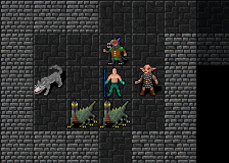
- 프로스트 노바: 플레이어 둘레로 얼음 고리가 퍼지고, 얼음 조각과 눈송이가 흩날려요
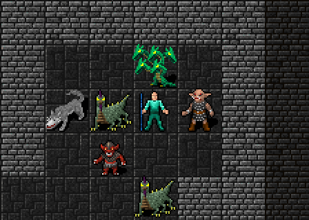
- 체인 라이트닝: 지그재그 번개가 몬스터를 하나씩 차례로 이어 가며 깜빡여요. 무기의 번개 피해도 가느다란 번개로 보여요
- 몬스터가 붉게 번쩍하는 때도 이펙트가 닿는 순간에 맞췄어요
흡혈은 초록 숫자로
흡혈이 붙은 장비로 때리면 HP가 조금씩 차는데, 지금까지는 눈에 보이지 않았어요. 이제 한 턴에 찬 HP를 모아서 플레이어 위에 초록 숫자(+N)로 보여 줘요. HP가 가득 차 있으면 숫자가 나오지 않아요.
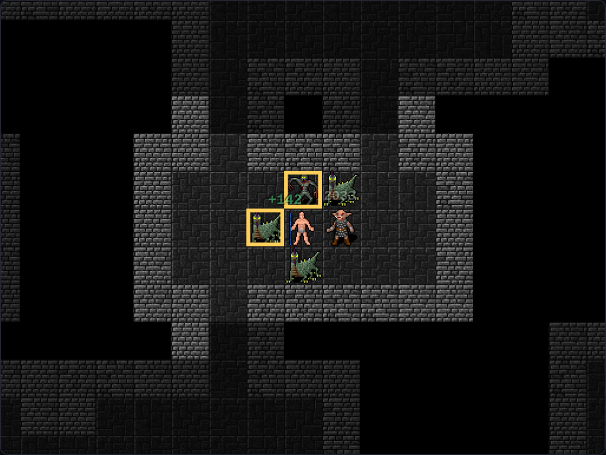
몬스터를 훌쩍 넘는 점프
몬스터에게 둘러싸이거나 좁은 통로에서 길이 막혔을 때 빠져나갈 방법이 없었어요. 그래서 점프를 만들었어요.
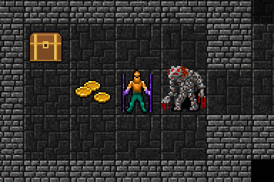
- Space를 누르고 방향을 고르면(휴대폰은 점프 버튼 → 방향 버튼) 2칸 앞으로 뛰어요. 그 대신 한 턴 쉬는 제자리 대기는 마침표(.) 키로 옮겼어요
- 가운데 칸의 몬스터는 넘을 수 있지만 벽은 못 넘어요. 내려설 칸은 비어 있어야 해요
- 한 턴을 쓰고 5턴마다 한 번 쓸 수 있어요
- 높이 뛰어오르는 동안 땅에 그림자가 생기고, 떠날 때와 내려설 때 먼지가 일어요
아이템 발견은 모은 만큼
파밍용 능력치 아이템 발견%에는 100%까지만 쳐 주는 최대치가 있었어요. 이제 최대치를 없애서 모은 만큼 그대로 효과가 나요. 장비로 모을 수 있는 가장 큰 값은 150%라서, 처치마다 보너스 아이템이 나올 확률이 최대 15%가 돼요.
메이플스토리처럼 뛰어오르는 점프 탑
점프를 만들고 나니 "메이플스토리처럼 점프와 방향키로 층을 올라가는 것도 될까?" 하는 생각이 들었어요. 던전은 한 칸씩 움직이는 턴 방식이라, 아예 옆에서 보는 실시간 맵을 따로 만들어 보기로 했어요. 오늘은 그 첫 시험판이에요.
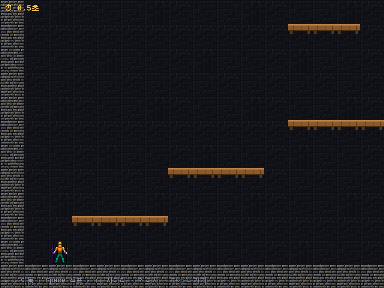
- 로비 왼쪽 아래에 점프 탑 건물이 생겼어요. 걸어 들어가면 화면이 옆모습으로 바뀌어요
- ← → 로 달리고 Space로 뛰어요. 꾹 누르면 높이, 짧게 누르면 낮게 뛰어요
- 나무 발판은 아래에서 뚫고 올라가 밟을 수 있고, ↓를 누르면 다시 내려가요. 돌 블록은 머리가 부딪혀요
- 가운데 긴 사다리는 ↑↓로 오르내려요. 중간의 깃발(체크포인트)을 지나면 초록으로 바뀌어요
- 맨 위 노란 깃발에 닿으면 클리어! 걸린 시간과 최고 기록이 남아요
- 휴대폰에서는 방향 버튼과 점프 버튼을 누르고 있는 동안 움직여요. 포탈 버튼을 누르면 로비로 나와요
아직 몬스터는 없어요. 먼저 뛰는 느낌이 괜찮은지 확인하고, 다음 단계에서 몬스터와 보상, 기록 순위를 붙일 생각이에요.
맵을 정말 깰 수 있는지도 테스트로 확인해요. 밟을 수 있는 발판마다 제자리 점프, 좌우 점프, 짧은 점프, 걸어서 떨어지기, 사다리를 진짜 물리로 하나씩 돌려 보고, 시작에서 깃발까지 이어지는 길을 찾아요. 위 그림도 키를 누를 시각을 이 물리로 미리 맞춘 뒤 게임에서 찍었어요.
탑이 아니라 사냥터로
시험판을 해 보고 나서 방향을 바로잡았어요. 원하던 건 탑을 오르는 게 아니라, 점프로 오르내릴 수 있는 발판이 있는 맵에서 몬스터를 사냥하는 거였어요. 그래서 점프 탑을 점프 던전 1층으로 바꿨어요.
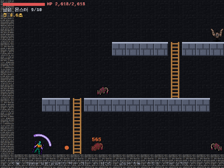
- 맵 곳곳의 발판과 사다리 위아래에 일반 던전 1층 몬스터 10마리가 돌아다녀요. 같은 발판에 서 있으면 몬스터가 다가와요
- 싸움은 자동이에요. 몬스터에 닿아 있으면 0.5초마다 서로 공격하고, 화염·서리·뇌전 세트 스킬도 알아서 써요. 하는 일은 잘 움직이는 것뿐이에요
- 피해는 던전과 같은 식으로 계산해서, 지금 낀 장비가 그대로 힘이 돼요
- 10마리를 다 잡으면 가운데에 파란 포탈이 열리고, 들어가면 1층 클리어!
- 아직 시험판이라 지금 하고 있는 던전 판과는 따로예요. 쓰러져도 1층을 처음부터 다시 할 뿐 판에는 영향이 없고, 경험치·골드·아이템은 다음 단계에서 붙일 거예요
움직임도 테스트로
움직이는 화면은 눈으로만 보면 놓치기 쉬워요. 그래서 테스트가 키를 누른 뒤 정해진 시간에 화면 픽셀을 세요.
- 공격한 순간 몬스터 칸이 붉어지는지, 끝나면 원래대로 돌아오는지 확인해요
- 걷는 중에는 플레이어가 두 칸 사이에 있다가 도착하는지 봐요
- 방패로 막으면 피해 없이 하얀 빛이 나는지 확인해요
- 레전더리 갑옷은 주황, 레어 갑옷은 파랑으로 보이는지 확인해요
- 스킬 이펙트가 불꽃·얼음·번개 색으로 나타났다 사라지는지, 흡혈하면 초록 숫자가 하나 뜨는지 확인해요
- 점프하면 몬스터를 넘어 2칸 앞에 내려서는지, 벽은 못 넘는지, 쿨타임이 저장되는지 확인해요
- 점프 던전에서 키를 누르고 있으면 달리고 나무 발판에 올라서는지, 몬스터에 닿으면 저절로 싸워 다 잡으면 포탈이 열리는지, 쓰러지면 처음부터 다시 하는지 확인해요
이 글의 움직이는 그림도 같은 방법으로, 게임 안에서 키를 누르며 화면을 40ms마다 찍어 이어 붙였어요.
다음에는
이제 던전이 꽤 살아 있는 느낌이 나요. 게임에 들어가 장비를 바꿔 입어 보고, 싸움이 어떻게 보이는지 확인해 보세요. 실제로 해 보면서 움직임의 빠르기나 색을 다듬을 거예요.